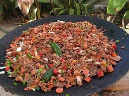

6.Chihuahua

- Platillo: Discada norteña
- Ingredientes: Carne de res, chorizo, jamón, salchicha, tocino, cebolla, chile, tomate.
- Historia: Platillo de vaqueros que usaban discos de arado como sartén para cocinar al aire libre.
- Dato curioso: Se sirve en reuniones al estilo parrillada, muy típico en el norte del país.